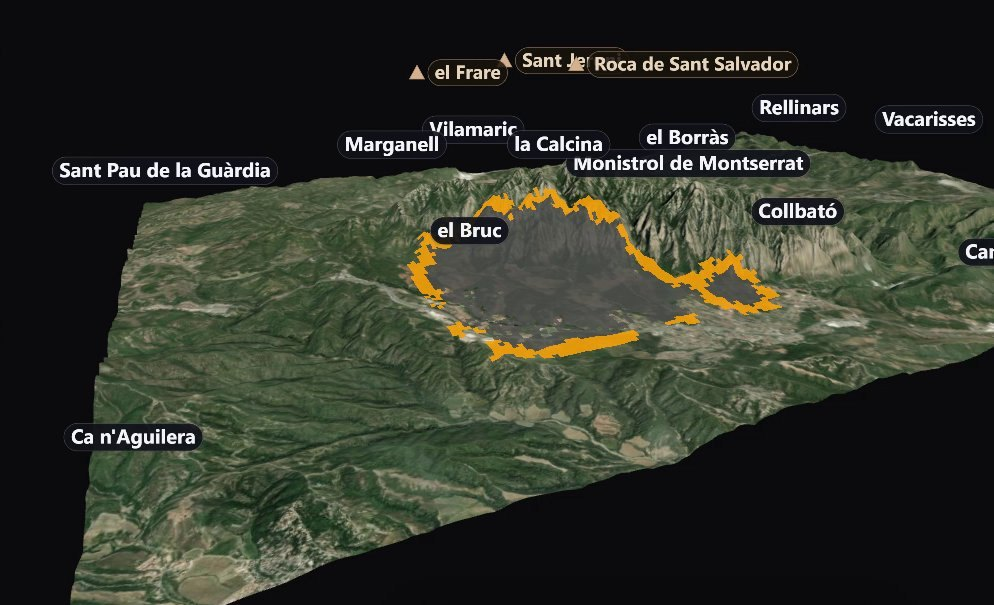

Mapa 3D del territorio
Relieve, satélite, pueblos y la vegetación que puede arder.

Talaia es una plataforma web en 3D para que ayuntamientos, consejos comarcales y ADF planifiquen, simulen y se formen ante los incendios forestales sobre su propio territorio. Desde el navegador, sin instalar nada.
Prototipo en desarrollo con datos reales de Cataluña. Piloto previsto en 2027.

Vídeo de 2:35 grabado con el prototipo real, con narración en catalán.
Relieve, satélite, pueblos y la vegetación que puede arder.
Eliges dónde empieza, el viento y la humedad, y ves cómo puede avanzar.
A pie o en coche, para preparar el plan municipal.
Formación y simulacros sobre el terreno, con gafas. En pruebas.